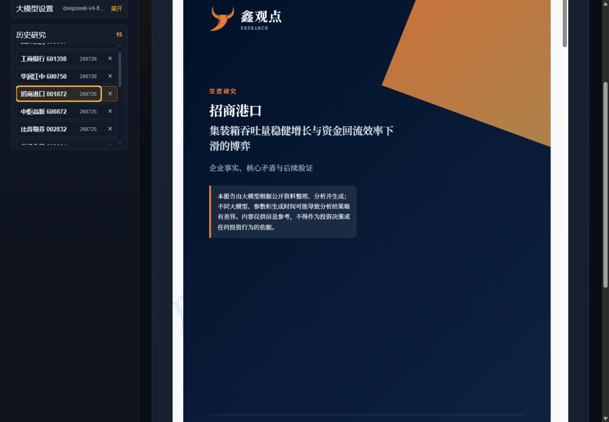

多来源资料核验
自动整理行情、财务、公告、新闻、政策、资金、解禁及行业资料，并显示取得的资料量。
系统围绕企业实际业务制定研究框架；资料不足时明确提示，不使用空洞模板拼出报告。
自动整理行情、财务、公告、新闻、政策、资金、解禁及行业资料，并显示取得的资料量。
先识别商业模式、行业属性和核心矛盾，再决定要研究什么、补采什么和比较哪些同行。
从真实候选公司中选择可比企业，核对规模、盈利、现金流、估值及行业专用经营指标。
围绕专属问题提出判断、检查反证、形成纪要，再由研究主编整合为可读结论。
根据真实数据选择图表和业务关系图，并插入对应分析段落，不生成无数据的占位图片。
正文、图表、证据来源与免责声明统一排版，可直接阅读并导出 PDF 保存。
不同企业采用不同研究问题、同行组合、章节结构和图表方案。

所有方案均使用用户自行购买和配置的大模型 API；订阅费用不包含模型调用费用。
支付和自动开通功能正在准备中，正式开放前不会要求用户私下发送 API Key。
公开版可以安装和体验企业研究流程。不同版本的具体免费额度和权益以软件内显示为准。
研究推演和报告撰写需要调用大模型。用户自行配置可以明确控制模型选择、调用额度和费用，也避免平台代管用户密钥。
耗时受企业资料量、网络状况、数据源和所选模型速度影响。软件会实时显示当前环节、资料量、完成进度和预计剩余时间。
不可以。报告由 AI 根据公开资料整理、分析并生成，可能存在资料延迟、遗漏或模型判断偏差，仅供信息参考。